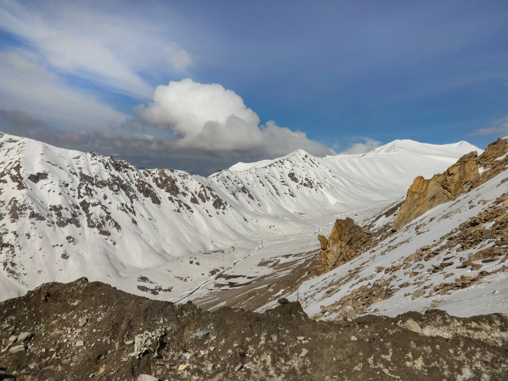

- Chadar is a winter trek on the frozen Zanskar river. It only runs when the ice is safe: Leh's authorities set the start each year after checking it, and some seasons are postponed or never open.
- It is the cold and the ice that make it hard (Bikat reports January nights of about -25 to -30 °C), not the altitude, which stays near 3,000 to 3,500 m.
- Plan for 3 nights in Leh first, a medical check, insurance and permits (about ₹6,000 to ₹8,000 on the spot, per Bikat), and an operator price near ₹22,500 to ₹32,000.
The Chadar trek is a winter walk on the frozen Zanskar river in Ladakh, usually from mid-January into February. It is hard because of the cold and the ice, and it only runs in years when the river freezes safely, so check the official start before you book flights.
Who is the Chadar trek for?
It is for fit, well-prepared trekkers who are comfortable with sub-zero cold, camping, dry-pit toilets and no phone signal. Bikat Adventures rates it difficult (5 on its scale) and suggests at least one comparable BRS 4 trek beforehand and being able to run 5 km in 25 to 30 minutes. Wikipedia lists the trek as extreme with severe cold as the main hazard. If you are new to mountains, build up first with the treks in our winter treks guide. The Chadar page has the 3D route.

Chadar trek itinerary
Routes and distances vary by operator and year; the road works and ice change them. This is Bikat Adventures' current nine-day plan, which turns back at Tsomo Paldar. Its page gives conflicting distances for some days, so check with your operator.
| Day | Plan | Sleep at |
|---|---|---|
| 1 | Arrive in Leh | Hotel, 3,500 m |
| 2 | Rest and acclimatise | Hotel, Leh |
| 3 | Rest, medical test, permits | Hotel, Leh |
| 4 | Drive Leh to Tilado (70 km), trek 3 to 4 km to Shingra Yokma | Tent, 3,300 m |
| 5 | Shingra Yokma → Shingra Koma (about 7 km) | Tent, 3,200 m |
| 6 | Shingra Koma → Tsomo Paldar (5 to 6 km) | Tent, 3,300 m |
| 7 | Tsomo Paldar → Shingra Yokma (12 km) | Tent, 3,300 m |
| 8 | Shingra Yokma → Tilado, drive to Leh | Hotel, Leh |
| 9 | Depart | - |
Other plans go on to Tibb cave and Nerak, a frozen waterfall; Bikat's page notes that under 2025 guidelines Nerak visits were allowed only on Wednesdays and Sundays. Wikipedia describes the route from Chilling, about 105 km one way in total, with sources giving different lengths. The altitude barely changes, so acclimatisation in Leh matters more than the climb: see how to read a trek's altitude gain.
Best time for the Chadar trek
- January: Bikat's month. Days about -5 to -10 °C, nights -25 to -30 °C. See treks in January.
- February: Wikipedia and Discover Leh Ladakh describe a season of mid-January to February. See treks in February.
- Any other month: no Chadar. The river runs free in summer. Markha Valley is the summer alternative next door.
The start date is not fixed. Discover Leh Ladakh says dates depend on a pre-trek safety survey and ice and weather conditions.

The ice: official advisories and what they mean for you
This is the biggest planning risk. Some examples reported from Ladakh:
- January 2024: Leh's Deputy Commissioner chaired a safety meeting after a police officer from the UT Disaster Response Force reported that the ice was not stable. He said tourists would be barred from the trek until conditions improved if the situation was judged critical, per Discover Leh Ladakh. The trek later opened with extra SOPs; the Tribune reported that officials and operators had to carry satellite phones.
- January 2025: an advance recce team recommended postponing the start because the river was not frozen at many places, and said "we cannot guarantee the safety of trekkers" (ETV Bharat). A second recce was planned for 10 January.
- 2026: Discover with Dheeraj, a travel blog rather than an official source, says the season effectively did not happen because the river never formed a continuous stretch of ice. We found no official notice for 2026, so check with the Leh Deputy Commissioner's office or ALTOA (the All Ladakh Tour Operators Association) before you commit.
Practical advice: choose a flexible booking, keep a buffer day or two, and ask your operator what happens to your payment if the trek is postponed.
Chadar trek cost
Base prices from each operator's own page in October 2026, from Leh. They change and are not directly comparable.
| Operator (own page) | Base price | Notes on that page |
|---|---|---|
| Thrillophilia | ₹22,500 | ex-Leh, 9 days, sale price |
| Himalayan Hikers | ₹25,000 | plus GST, insurance extra, permits about ₹5,000 paid in Leh |
| Bikat Adventures | ₹25,500 | plus 5% GST; hotels in Leh, tents, sleeping bags and meals on trek included; gum boots not included |
| Treks and Trails India | ₹27,500 | permit and medical fees about ₹5,800 extra |
| Himalaya Shelter | ₹32,000 | plus GST |
Discover with Dheeraj estimates permits, NOC, wildlife, medical and rescue charges at about ₹6,000 to ₹10,000 per person at the Tourist Information Centre (TIC) in Leh, plus flights and gear rental. See how much a trek in India costs.
Permits, medical check and insurance
- Registered operator only: only trekkers booked through a registered, ALTOA-approved operator may trek, per Discover with Dheeraj.
- Leh first: at least 3 nights in Leh before the medical on day 3. Keep your flight boarding pass; the TIC checks it.
- Medical: done at the TIC in Leh. The check covers AMS symptoms, heart conditions, blood pressure and fitness. If you fail, you cannot trek.
- Insurance and rescue: adventure insurance (ASC360) is bought at the TIC after the medical and covers rescue and evacuation.
- Group cap: Discover Leh Ladakh's SOP lists at most 10 groups a day and 10 trekkers a group, and firewood carried from Leh.
- Foreigners: arrange your own insurance that covers Chadar, since Bikat says its cover does not include foreigners.
Rules change each year. Read trek permits in India and confirm with your operator.
Cold, altitude and safety
Discover with Dheeraj lists frostbite, hypothermia, altitude sickness, slips on ice and snow blindness among the risks, with temperatures from -10 °C down to -35 °C. Walking days are about 12 to 16 km with a daypack. Layer up, keep your feet and gloves dry, and tell your trek leader early about numb fingers, shivering, headache or confusion. Read altitude sickness on treks. Talk to a doctor before you go, especially if you have heart or breathing issues. Bikat's January figures show why: nights of -25 to -30 °C.
What to pack for Chadar
Himalayan Hikers lists thermals, a heavy down jacket, windproof outer layer, balaclava, two layers of gloves, high-ankle waterproof shoes, gaiters, insulated bottle, UV sunglasses and spare batteries kept inside your jacket. Bikat lists gum boots as not included. Start from the Himalayan trek packing list and add winter layers.
Sources
- Bikat Adventures: Chadar trek
- Discover with Dheeraj: Chadar permits, rules and 2026 status
- Discover Leh Ladakh: Chadar trek SOP
- Discover Leh Ladakh: no Chadar trek until stable ice (January 2024)
- ETV Bharat: Chadar trek 2025 postponement
- Wikipedia: Chadar trek
- Himalayan Hikers: Chadar trek
- Thrillophilia: Chadar trek
- Treks and Trails India: Chadar trek
- Himalaya Shelter: Chadar trek
Quick questions
When is the Chadar trek open?
Only in deep winter, usually mid-January to February, and only after the ice is checked. Leh's authorities set the start date each year; in 2024 and 2025 the start was delayed because the ice was not stable or had not formed, per reports.
Is the Chadar trek safe?
It is rated difficult to extreme and the main hazards are extreme cold, slips on ice, altitude and thin ice. You must trek with a registered operator, pass a medical check in Leh and carry insurance.
How much does the Chadar trek cost?
Operators list roughly ₹22,500 to ₹32,000 from Leh on their own pages, with permit and medical fees of about ₹6,000 to ₹8,000 paid separately in some cases. Add flights to Leh and gear. Prices change.
Can I do the Chadar trek without an operator?
Not legally on the ordinary route, per the permit rules we found: only trekkers booked through a registered, ALTOA-approved operator may trek.